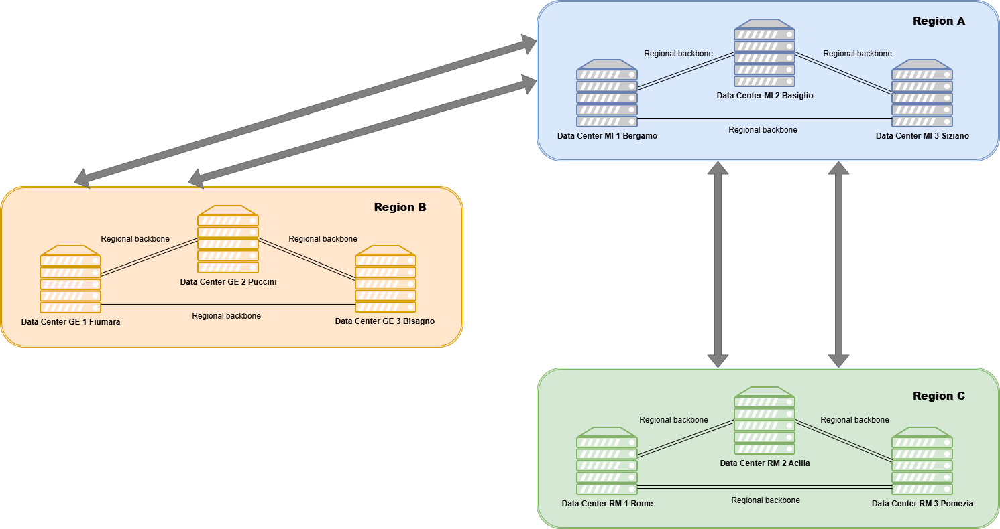

Data Centers Description
General architecture
The Cloud Services described in the relevant categories are hosted within 9 Data Centers distributed throughout Italy and spread across 3 Regions (A, B, and C), each redundant with three highly reliable Availability Zones.

{kind=link}
The infrastructure configuration is fully redundant thanks to the division of each of the three Regions, whose maximum distance exceeds 400 km. Each Region is composed of three Availability Zones (AZs), three Data Centers configured for business continuity, separated as the crow flies by tens of kilometers.
Specifically, the following table shows the DC association for each region:
| Region | List of Data Centers |
|---|---|
| Region A | DC MI 1 Bergamo |
| Region A | DC MI 2 Basiglio |
| Region A | DC MI 3 Siziano |
| Region B | DC GE 1 Fiumara |
| Region B | DC GE 2 Puccini |
| Region B | DC GE 3 Bisagno |
| Region C | DC RM 1 Rome |
| Region C | DC RM 2 Acilia |
| Region C | DC RM 3 Pomezia |
The following table summarizes the approximate geographical distances between the three Regions hosting the platform infrastructure:
| SOURCE REGION | DESTINATION REGION | DISTANCE |
|---|---|---|
| Region A | Region B | > 100 km |
| Region A | Region C | > 400 km |
| Region B | Region C | > 500 km |
The following table summarizes the approximate distances between the Data Centers located within Region A:
| DATA CENTER | DATA CENTER | DISTANCE |
|---|---|---|
| DC MI 1 Bergamo | DC MI 2 Basiglio | ~53 km |
| DC MI 1 Bergamo | DC MI 3 Siziano | ~54 km |
| DC MI 2 Basiglio | DC MI 3 Siziano | ~10 km |
The following table summarizes the approximate distances between the Data Centers located within Region B:
| DATA CENTER | DATA CENTER | DISTANCE |
|---|---|---|
| DC GE 1 Fiumara | DC GE 2 Puccini | ~10 km |
| DC GE 1 Fiumara | DC GE 3 Bisagno | ~15 km |
| DC GE 2 Puccini | DC GE 3 Bisagno | ~15 km |
The following table summarizes the approximate distances between the Data Centers located within Region C:
| DATA CENTER | DATA CENTER | DISTANCE |
|---|---|---|
| DC RM 1 Rome | DC RM 2 Acilia | ~30 km |
| DC RM 1 Rome | DC RM 3 Pomezia | ~30 km |
| DC RM 2 Acilia | DC RM 3 Pomezia | ~15 km |
All data centers are equipped with all the technical and technological infrastructure necessary to ensure the highest quality standards in terms of reliability, availability, and physical security.
The three Availability Zones are interconnected via a dedicated regional backbone, which guarantees complete redundancy, negligible latency, and priority connectivity, logically characterizing the Regions as a single virtual Data Center (Software Defined Data Center).
The Regions are also interconnected via dedicated and reserved interregional backbones with IP/MPLS network transmission, enabling a flexible, software-defined logical network architecture, ensuring the mobility of application loads and the inherent high reliability of Cloud solutions. Within an Availability Zone, workloads are transparently distributed, and the HA (High Availability) configuration enables infrastructure service continuity (Business Continuity) between the three Data Centers in the same Region.
The Cloud platform enables resilient data distribution across the three Availability Zones of each Region through enterprise-grade Storage Arrays deployed in a tri-site configuration, ensuring continuous synchronous/asynchronous replication.
The Leonardo Secure Cloud Management Platform standardizes service delivery across all Regions by exposing a unified API framework and a single management portal. This guarantees homogeneous provisioning, automation, monitoring, and failover operations, enabling consistent DR/BC plan design and execution regardless of workload placement.
The regional backbone interconnecting the three AZs supports high-throughput, low-latency replication, enabling transparent workload reactivation within any AZ or across Regions. Organizations can independently orchestrate DR/BC scenarios leveraging the platform’s native redundancy, standardized control interfaces, and storage-tier replication capabilities.
Network description
The network is structured around three main components:
- Data Center Interconnection
- Wide Area Network
- Local Area Network
Data Center Interconnection (DCI)
Interconnection between the Data Centers relies on a high-capacity transport infrastructure built to ensure minimal latency, fault tolerance, and uninterrupted service.
Key elements include:
Network Architecture Components
| COMPONENT | DESCRIPTION |
|---|---|
| IP/MPLS backbone | Fully redundant backbone infrastructure optimized for reliable, resilient, and high-performance routing across the network. |
| DWDM technology | Dense Wavelength Division Multiplexing (DWDM) technology supporting high-capacity optical transmission with very low latency and high bandwidth availability. |
| VLAN-based segmentation | Provides logical traffic isolation through VLANs, enabling secure multi-tenant environments and separation of traffic domains across different Organizations. |
| Traffic management policies | Controls routing behavior, traffic prioritization, and bandwidth allocation to ensure predictable performance and efficient resource utilization. |
The DCI enables operation in a multi-region configuration with three Availability Zones, essential for high availability, synchronous/asynchronous replication, and business continuity.
Wide Area Network (WAN)
The WAN provides secure, high-performance connectivity to external networks, supporting access to the services. It includes:
| CATEGORY | DESCRIPTION |
|---|---|
| Shared Internet connectivity | Offers controlled access to platform services through shared Internet connectivity. |
| Traffic management | Provides traffic profiling tools for bandwidth management, flow optimization, and congestion prevention. |
| Security and performance monitoring | Includes IDS systems for threat detection and APM systems for application and service performance monitoring. |
| Dedicated connectivity services | Supports dedicated line aggregation, VPN connectivity, special-purpose links for data migration, and hosting of termination routers directly within the facilities. |
The WAN ensures each Organization has isolated, secure channels for interacting with the infrastructure while maintaining high security and reliability.
Data Centers characteristics and technical specification
This section lists the general characteristics and technical specifications of the Data Center.
General requirements and site criteria
The architecture is designed to meet high standards for security, resilience, and sustainability, aligned with TIER III certifications and current regulatory requirements.
The Data Centers are selected and designed to reduce environmental and external risks:
- Located in seismic zones classified as zone ≥3.
- Sited away from coasts, major rivers, and heavily trafficked areas.
- Positioned near metropolitan zones while maintaining low risk.
- Equipped with independent power feeds, not derived from the same medium/high-voltage substation.
Compliance with key regulations is ensured.
Technical specifications
This section lists the technical specifications for each Data Center.
The Region A Data Centers
DC MI 1 Bergamo
General Specifications
| PARAMETER | VALUE |
|---|---|
| Total surface area | 17,600 m² |
| Data hall surface area | 8,050 m² |
| Number of independent data rooms | 10 |
| Seismic risk profile | Secure location |
| Hydro-geological risk profile | Secure location |
Building
| PARAMETER | VALUE |
|---|---|
| Data hall height | 3.5 m |
| Upper plenum height | 2.5 m |
| Lower plenum height | 2.0 m |
| Raised floor load capacity | 2,000 kg/m² (distributed load); 1,000 kg/m² (concentrated load) |
| External firewalls | REI 240 |
| Internal firewalls | REI 120 |
| Insulation system | Double insulation with defrost system |
| Loading bays | Double loading bay |
Certifications & Compliance
| CERTIFICATION / STANDARD | DESCRIPTION |
|---|---|
| ANSI/TIA 942-B-2017 Rating 4 | Formerly Tier IV |
| GO | Guarantee of Energy Origin |
| Code of Conduct for Data Center Energy Efficiency | Energy efficiency best practices |
| ISO 9001 | Quality management system |
| ISO 14001 | Environmental management system |
| ISO 22237 | Data centre facilities and infrastructure |
| ISO 27001 | Information security management |
| ISO 50001 | Energy management system |
| ISO/IEC 27017 | Cloud security controls |
| ISO/IEC 27018 | Protection of personal data in cloud environments |
| ISO/IEC 27035 | Security incident and event management |
Connectivity
| PARAMETER | VALUE |
|---|---|
| Points of entry | 4 |
| Entrance rooms | 2 |
| Main Distribution Areas (MDA) | 2 |
| Carrier neutrality | Carrier-neutral data center |
| Managed connectivity | Available |
| Internet exchange connectivity | Dual transmission system to Milan Internet eXchange (MIX) |
Energy
| PARAMETER | VALUE |
|---|---|
| Utility connection points | 2 |
| Total IT power | 12 MW IT (2N redundant) |
| UPS redundancy | 2N+1 |
| UPS type | Double-conversion static |
| Individual UPS power | 500 kVA |
| UPS runtime | 15 minutes (emergency conditions); 40 minutes (standard conditions) |
| Generator redundancy | 2N |
| Generator type | Diesel generator units |
| Full-load autonomy | 26 hours (emergency conditions); 52 hours (standard conditions) |
Cooling
| PARAMETER | VALUE |
|---|---|
| Cooling technology | Chilled water; water-to-water; water-to-air |
| Primary cooling mode | Groundwater cooling system |
| Heat exchanger redundancy | 2N |
| Groundwater extraction wells | 5 |
| Emergency cooling mode | Air/water chiller |
| CRAH redundancy | 2N |
Security
| FEATURE | DESCRIPTION |
|---|---|
| CCTV | Continuous video surveillance |
| Physical security | 24x7x365 on-site security personnel |
| Parking areas | Separate parking for employees and visitors |
| Perimeter protection | Vehicle bollards |
| Access control | Separate entrances for visitors and goods |
| Secure access points | Mantraps with anti-tailgating and anti-piggybacking systems |
| NOC | Network Operations Center |
| SOC | Security Operations Center |
| FOC | Facility Operations Center |
| BMS | Building Management System |
Fire Prevention System
| PARAMETER | VALUE |
|---|---|
| Air replacement rate | 2 volumes/hour |
| Extinguishing system | Inert gas |
| Extinguishing gas | IG-541 |
| Cylinder redundancy | 2N |
| Smoke detection | Highly sensitive smoke detection system |
| Liquid leakage detection | Available |
| Module-level protection | Dedicated fire detection and extinguishing system for each module |
| Generator protection | Standalone fire detection and extinguishing system for each generator unit |
DC MI 2 Basiglio
General Specifications
| PARAMETER | VALUE |
|---|---|
| Colocation space | 2,380 m² |
| Global uptime average | >99.999% |
| Energy source | 100% renewable energy |
Building
| PARAMETER | VALUE |
|---|---|
| Building type | 4-floor concrete structure |
| Floor type | Raised floor |
| Floor load capacity | 1,500 kg/m² |
| Parking | Adjacent to building (free) |
| Seismic design | Low seismic category |
| Flood zone | Not applicable |
Certifications & Compliance
| CATEGORY | CERTIFICATION |
|---|---|
| ISO Standards | ISO 9001 |
| ISO 22301 | |
| ISO 27001 | |
| ISO 45001 | |
| ISO 14001 | |
| ISO 50001 | |
| Other Certifications | Cyber Essentials |
| PCI DSS | |
| SOC 1 Type II | |
| SOC 2 Type II | |
| EU Code of Conduct |
Connectivity
| FEATURE | DESCRIPTION |
|---|---|
| Carrier ecosystem | Access to 30+ carriers across the Milan metro ecosystem |
| Internet exchange connectivity | Direct peering through Equinix Internet Exchange™ |
| Cloud interconnection | Direct connectivity via Equinix Fabric® to distributed digital infrastructure |
| Regional interconnections | Access to MIX, TOP-IX and other interconnections at Via Caldera, Milan |
Energy
| PARAMETER | VALUE |
|---|---|
| Utility feeders | 1 × 3 MVA electrical feed |
| PS configuration | N+N |
| UPS redundancy | N+1 |
| Standby power configuration | 2 × 1,900 kVA diesel generators (mechanical load); 4 × 1,400 kVA diesel generators (IT load) |
| Standby power redundancy | N+N |
| Power density | 1.0–7.0 kVA per cabinet |
Cooling
| PARAMETER | VALUE |
|---|---|
| Cooling configuration | Chilled water system |
| Cooling redundancy | N+1 |
Security
| CATEGORY | FEATURE |
|---|---|
| Physical Security | Mantrap entry |
| Proximity access card + PIN | |
| Human Security | 24/7 on-site security officers |
| Electronic Security | PIN and card readers |
| Optional biometric readers for customer cages | |
| CCTV with 7-day video retention | |
| Motion detection |
Fire Prevention System
| CATEGORY | FEATURE |
|---|---|
| Detection | VESDA |
| HSSD (High Sensitivity Smoke Detection) | |
| Visual and audio alarms | |
| Double-knock activation | |
| Suppression Agents | Novec |
| FM200 | |
| Argon |
DC MI 3 Siziano
General Specifications
| PARAMETER | VALUE |
|---|---|
| Campus location | Siziano (PV), hosting all CoreTech hosting and cloud infrastructures |
| Campus surface area | 100,000 m² |
| Building footprint | 42,000 m² |
| Data center standard | Tier IV multi-tenant data center |
| Availability target | 100% Power & Cooling guaranteed uptime |
| Energy efficiency | Advanced cooling and climatization technologies |
Building
| CATEGORY | FEATURE |
|---|---|
| Structural Design | Constructed according to NTC anti-seismic regulations (D.M. 14/01/2008) |
| Double roof resistant to winds up to 280 km/h | |
| Intumescent-coated metal structure for fire resistance | |
| Perimeter walls of the technical area built to REI120 standards | |
| Flood Mitigation | 3 m-high perimeter wall, waterproofed up to 1.5 m |
| Building elevation +1 m above primary urban level | |
| Rain-water balance basin for extreme weather events | |
| Cooling Infrastructure | No water pipes inside the data center (air-based cooling) |
| Innovation | Infrastructure benefits from 218 patented technologies (granted or pending) |
Certifications & Compliance
| CERTIFICATION | DESCRIPTION |
|---|---|
| ISO 9001:2015 | Quality Management |
| ISO 14001:2015 | Environmental Management |
| OHSAS 18001 | Health & Safety Management |
| ISO 27001:2013 | Information Security Management |
| ISO 50001:2011 | Energy Management |
| ANSI/TIA-942-B:2017 | Rating 4 (Tier IV) |
Connectivity
| FEATURE | DESCRIPTION |
|---|---|
| Fiber infrastructure | 100 fiber pairs with diversified routes in a multi-carrier configuration provide connectivity to each data hall. |
| Structured cabling | Fiber, copper, and electrical cabling run through dedicated overhead trays. |
Energy
| CATEGORY | FEATURE |
|---|---|
| Power Supply | Campus powered by a redundant 132 kV high-voltage line supporting up to 40 MW at full capacity. |
| UPS Architecture | Tri-redundant UPS system ensuring 100% availability. |
| Electrical Architecture | Engineered for Tier IV “system + system” (2N+1) requirements. |
| Two completely independent electrical systems. | |
| Each capable of supporting the full facility load. | |
| Independent UPS, Bypass Modules, PDUs, and RPPs. | |
| Rack Power Distribution | Dual power feeds (Feed A + Feed B) supplied from separate electrical systems. |
Cooling
| FEATURE | DESCRIPTION |
|---|---|
| Cooling system | Modular AHUs (Air Handling Units). |
| Cooling technology | Indirect evaporative cooling with air-to-air heat exchangers cooled by external water systems. |
| Energy efficiency | Designed to achieve an estimated PUE lower than 1.4. |
| Resilience | Steel infrastructure under the T-SCIF acts as a thermal flywheel to increase resilience. |
Security
| CATEGORY | FEATURE |
|---|---|
| Physical Security | Multilevel badge and numeric code access control. |
| 24x7x365 security personnel and anti-intrusion systems. | |
| CCTV video surveillance with privacy-compliant digital archiving. | |
| Data Hall Security | 4 data halls (expandable to 6), supporting up to 1,056 racks per hall. |
| Racks organized into T-SCIF islands (Thermal Separate Compartment in Facility). | |
| Complete separation of hot and cold airflows. | |
| Cage-protected environment. | |
| Maximized density and thermal efficiency. |
Fire Prevention System
| CATEGORY | FEATURE |
|---|---|
| Fire Protection | Intumescent paint on metal structures. |
| REI120 fire-resistant perimeter walls around technical areas. | |
| Fire-resistant compartmentalization as part of the electrical and environmental risk-mitigation strategy. |
The Region B Data Centers
DC GE 1 Fiumara
Building
| PARAMETER | VALUE |
|---|---|
| Data center classification | Tier II |
Certifications & Compliance
| CERTIFICATION | DESCRIPTION |
|---|---|
| ISO 27001 | Information Security Management |
Connectivity
| FEATURE | DESCRIPTION |
|---|---|
| Redundant dark fiber connectivity | Two redundant dark fiber links (100 + 100 Gbps) between GE1 and GE2. |
Energy
| CATEGORY | FEATURE |
|---|---|
| Power Supply | Two power supply branches (A and B) connected to the same substation, delivering up to 1 MW (500 kW + 500 kW). |
| Substation Infrastructure | 3 × 1600 kVA transformers. |
| 1 medium-voltage main switchboard. | |
| 2 low-voltage switchboards. | |
| 824 kW generator. | |
| 320 kW UPS. | |
| Roadmap | Upgrade to Tier III standards planned for completion in 2026. |
Cooling
| FEATURE | DESCRIPTION |
|---|---|
| Cooling system | Air cooling system composed of 7 CDZ units with water-based technology (chilled water) and liquid cooling capabilities. |
Security
| CATEGORY | FEATURE |
|---|---|
| Physical Security | Perimeter walls. |
| Reception area. | |
| Access Control | Fingerprint or badge-based access control. |
| Monitoring & Surveillance | Internal VDS system protecting the data center. |
| Internal armed surveillance service operating 24x7. |
Fire Prevention System
| FEATURE | DESCRIPTION |
|---|---|
| Fire suppression system | Gas-based extinguishing system with NOVEC 1230 agent. |
DC GE 2 Puccini
Building
| PARAMETER | VALUE |
|---|---|
| Data center design | Built according to Tier III design principles. |
Certifications & Compliance
| CERTIFICATION | DESCRIPTION |
|---|---|
| ISO 27001 | Information Security Management |
Connectivity
| FEATURE | DESCRIPTION |
|---|---|
| Redundant dark fiber connectivity | Two redundant dark fiber links (100 + 100 Gbps) between GE1 and GE2. |
Energy
| CATEGORY | FEATURE |
|---|---|
| General Characteristics | Dual power branches (A and B). |
| Maximum supported IT load: 340 kW, depending on installed cooling units. | |
| Branch A | Data Center Branch "A" Distribution Cabinet. |
| 1 × 1000 kW transformer. | |
| 1 LV main panel. | |
| Equivalent earthing system connected to the main earthing system. | |
| 1 × 576 kW Milantractor generator. | |
| 1 UPS consisting of 1 × 500 kW Piller rotary unit. | |
| Branch B | Data Center Branch "B" Distribution Cabinet. |
| 1 × 1000 kW transformer. | |
| 1 LV main panel. | |
| Equivalent earthing system connected to the main earthing system. | |
| 1 × 500 kW Perkins generator. | |
| 1 × 576 kW Spark generator dedicated to air conditioning. | |
| 1 UPS consisting of 1 × 500 kW Piller rotary unit. |
Cooling
| FEATURE | DESCRIPTION |
|---|---|
| Cooling system | Air cooling system composed of 6 CDZ units with mixed water-based (chilled water) and gas cooling technology. |
Security
| CATEGORY | FEATURE |
|---|---|
| Physical Security | Perimeter walls. |
| Reception area. | |
| Access Control | Fingerprint or badge-based access control. |
| Monitoring & Surveillance | Internal VDS system protecting the data center. |
| Internal armed surveillance service operating 24x7. |
Fire Prevention System
| FEATURE | DESCRIPTION |
|---|---|
| Fire suppression system | Water mist extinguishing system. |
DC GE 3 Bisagno
General Specifications
| PARAMETER | VALUE |
|---|---|
| Submarine cable landing | Landing point for Blue and Raman submarine cable systems. |
| BlueMed system | Connectivity branches between Italy, Africa, Europe, and the Middle East. |
| Future expansion | Infrastructure designed to support up to six additional submarine cable systems through the Genoa Landing Platform. |
Certifications & Compliance
| CATEGORY | CERTIFICATION |
|---|---|
| ISO Certifications | ISO 9001 |
| ISO 14001 | |
| ISO 45001 | |
| ISO 27001 |
Connectivity
| FEATURE | DESCRIPTION |
|---|---|
| IP Transit Services | Active IP node providing IP transit services integrated with Sparkle's global Tier-1 Seabone backbone. |
| Submarine Cable Systems | Supports or is planned to support multiple undersea cable systems, including BlueMed, Blue & Raman, and Unitirreno. |
| Interconnection & Peering | Access to local Internet Exchange ecosystems and peering services, aligned with the Ge-DIX Internet Exchange. |
Energy
| PARAMETER | VALUE |
|---|---|
| Installed power | 4.7 MW |
| Sustainability approach | Infrastructure designed with a strong focus on environmental sustainability. |
Cooling
| FEATURE | DESCRIPTION |
|---|---|
| Cooling technology | Advanced cooling systems, including environmentally sustainable ("green") cooling techniques. |
| Energy storage | Lithium-ion battery systems. |
Security
| CATEGORY | FEATURE |
|---|---|
| Digital Security | Security management aligned with ISO 27001 standards. |
| Security Services | DDoS protection services. |
| Virtual NAP capabilities. |
The Region C Data Centers
DC RM 1 Rome
General Specifications
| PARAMETER | VALUE |
|---|---|
| Total surface area | 10,730 m² |
| Data hall surface area | 3,120 m² |
| Number of independent data rooms | 6 |
| Floors hosting data halls | 3 |
| Seismic risk profile | Secure location |
| Hydro-geological risk profile | Secure location |
Building
| PARAMETER | VALUE |
|---|---|
| Data hall height | 3.5 m |
| Upper plenum height | 1.4 m |
| Lower plenum height | 1.95 m |
| Raised floor load capacity | 2,000 kg/m² (distributed load); 1,000 kg/m² (concentrated load) |
| External firewalls | REI 240 |
| Internal firewalls | REI 120 |
| Insulation system | Double insulation with defrost system |
| Loading bays | Double loading bay |
Certifications & Compliance
| CERTIFICATION | DESCRIPTION |
|---|---|
| ANSI/TIA 942-C-2024 Rating 4 | Formerly Tier IV |
| ISO 9001 | Quality of services offered |
| ISO 14001 | Environmental management system |
| ISO 22237 | Data Center Lifecycle Management |
| ISO 27001 | Information security management |
| ISO 45001 | Workplace health and safety management system |
| ISO 22301 | Business continuity management system |
| ISO 20000-1 | IT service management |
Connectivity
| CATEGORY | FEATURE |
|---|---|
| Infrastructure | 6 Points of Entrance (PoE) |
| 2 Entrance Rooms | |
| 2 Main Distribution Areas (MDA) | |
| Services | Carrier-neutral data center |
| Provision of managed connectivity |
Energy
| PARAMETER | VALUE |
|---|---|
| Total IT power | 6 MW IT (2N redundant) |
| UPS redundancy | 2N+1 |
| UPS type | Double-conversion static |
| Individual UPS power | 500 kVA |
| UPS runtime | 15 minutes at full load in emergency conditions; 30 minutes in standard conditions |
| Generator redundancy | 2N |
| Generator type | Diesel generator units |
| Full-load autonomy | 24 hours in emergency conditions; 48 hours in standard conditions; fuel refill within 12 hours |
Cooling
| PARAMETER | VALUE |
|---|---|
| Cooling type | Chilled water, water-to-air system |
| Normal operating mode | Air/water chiller with indirect free cooling |
| Chiller redundancy | 2N |
| CRAH redundancy | 2N |
Security
| CATEGORY | FEATURE |
|---|---|
| Physical Security | CCTV |
| 24x7x365 on-site security | |
| Separate parking areas for employees and visitors | |
| Vehicle bollards | |
| Separate entrance gates for visitors and goods | |
| Mantrap for visitors and goods with anti-tailgating protection | |
| Operations Centers | Network Operations Center (NOC) 24x7x365 |
| Security Operations Center (SOC) 24x7x365 | |
| Facility Operations Center (FOC) 24x7x365 | |
| Facility Management | Building Management System (BMS) |
Fire Prevention System
| CATEGORY | FEATURE |
|---|---|
| Fire Suppression | Inert gas extinguishing system (IG-541) |
| Redundancy of extinguishing cylinders: 2N | |
| Air Management | Air exchange rate: 2 volumes/hour |
| Detection & Protection | Highly sensitive smoke detection system |
| Underfloor liquid loss detection system | |
| Fire detection and extinguishing system in each individual module | |
| Standalone fire protection system for every generator unit |
DC RM 2 Acilia
General Specifications
| PARAMETER | VALUE |
|---|---|
| Total surface area | 8,000 m² |
| Electrical infrastructure | Powered by two separate medium-voltage lines, each supplied by a distinct ACEA substation, ensuring electrical redundancy. |
Certifications & Compliance
| CATEGORY | CERTIFICATION / STANDARD |
|---|---|
| Data Center Certification | Tier IV |
| ANSI/TIA-942 Rating 4 | |
| Management Standards | ISO 50001 (Energy Management) |
| ISO 14001 (Environmental Management) | |
| ISO 27001 (Information Security Management) | |
| ISO 20000-1 (IT Service Management) | |
| ISO 22301 (Business Continuity Management) | |
| ISO 9001 (Quality Management) | |
| Energy Efficiency | European Data Center Code of Conduct |
Connectivity
| CATEGORY | FEATURE |
|---|---|
| Fiber Connectivity | Dual-ring fiber connectivity through two distinct Points of Entry (POEs) connected to Rome-based optical backbone POPs. |
| Campus Distribution | Physically separated fiber paths between POEs and meet-me rooms/data halls. |
| Availability Zone Interconnection | Three Availability Zones interconnected through high-capacity DWDM links with proprietary backbone infrastructure for redundancy and low latency. |
Energy
| FEATURE | DESCRIPTION |
|---|---|
| Renewable energy | Powered by 100% renewable energy. |
| Photovoltaic system | On-site photovoltaic installation with a capacity of up to 75 kW. |
| Energy management | Real-time monitoring of electrical and thermal parameters to support predictive maintenance and energy efficiency optimization. |
Cooling
| FEATURE | DESCRIPTION |
|---|---|
| Cooling architecture | Air distribution through raised-floor systems with return air collected via alternating ceiling plenums. |
| Free cooling | Utilizes external air when environmental conditions allow, reducing mechanical refrigeration requirements. |
| Geothermal heat exchangers | Ground-based dispersers used for heat rejection from chillers when required. |
| Environmental monitoring | Building Management System (BMS) continuously monitors temperature, humidity, and airflow to optimize cooling operations. |
Security
| CATEGORY | FEATURE |
|---|---|
| Physical Security | External and internal fencing with anti-climb perimeter protection. |
| Armed security guard presence. | |
| Site-wide CCTV surveillance. | |
| Pedestrian access controlled through mantraps and security turnstiles. | |
| Intrusion detection systems with perimeter alarms. | |
| Blast-resistant and reinforced windows. | |
| Internal security patrols and rounds. | |
| Access Control | Access to data halls through security airlocks (bussole) with dual badge-based authentication. |
| Cyber Security | Continuous monitoring by a Security Operations Center (SOC). |
| Compliance & Governance | Compliance with Technical Security Measures (MTMS) covering logical segmentation, risk management, and protection controls. |
Fire Prevention System
| CATEGORY | FEATURE |
|---|---|
| Detection | Very Early Smoke Detection Apparatus (VESDA) or equivalent high-sensitivity smoke detection systems. |
| Fire Suppression | 3M Novec 1230 extinguishing agent, electrically non-conductive and designed to absorb heat and inhibit combustion. |
| Redundancy | Fire suppression system designed with 2N redundancy to ensure full reliability and operational continuity. |
DC RM 3 Pomezia
General Specifications
| PARAMETER | VALUE |
|---|---|
| Campus surface area | Approximately 51,000 m² |
| Infrastructure layout | 13 system rooms and 6 telecom rooms |
Building
| CATEGORY | FEATURE |
|---|---|
| Structural Design | The PISP building is elevated and equipped with a 0.9 m raised floor to provide enhanced protection against flooding events. |
| Power Infrastructure | Power supplied through two independent 20 kV medium-voltage lines connected to an ACEA substation. |
| Electrical Distribution | Primary distribution designed with N+1 redundancy. |
| Secondary distribution designed with A+B (or N+1) architecture and dual radial paths. |
Certifications & Compliance
| CERTIFICATION | DESCRIPTION |
|---|---|
| Uptime Institute Tier III | Data center design and operational standard |
| ANSI/TIA-942 Rating 3 | Facility design certification |
| ISO 50001 | Energy Management |
| ISO 14001 | Environmental Management |
| ISO 9001 | Quality Management |
| ISO 27001 | Information Security Management |
| ISO 22301 | Business Continuity Management |
Connectivity
| CATEGORY | FEATURE |
|---|---|
| Network Connectivity | Connected through a dual-fiber ring with two independent paths linking the facility to the main ISP core network via Rome-based POPs. |
| Campus Infrastructure | Physically separated fiber routes between Points of Entry (POEs), meet-me rooms, and system rooms to ensure redundancy and resilience. |
Energy
| CATEGORY | FEATURE |
|---|---|
| Electrical Supply | Redundant 20 kV medium-voltage power lines ensuring high availability. |
| Backup Power | Two diesel generators and two DRUPS (UPS + generator combination units). |
| Fuel Storage | Two double-walled 15,000-liter diesel tanks equipped with leak detection systems and reserved for emergency use. |
| Sustainability | Infrastructure aligned with green energy standards and sustainability objectives. |
Cooling
| CATEGORY | FEATURE |
|---|---|
| Cooling Architecture | Dual-loop refrigerant circulation system with two independent cooling loops. |
| Chiller Infrastructure | Redundant rooftop chillers configured in N+1 mode to ensure uninterrupted thermal rejection. |
| Precision Cooling | Approximately 120 air-conditioning units installed within the system rooms to manage localized heat loads. |
Security
| CATEGORY | FEATURE |
|---|---|
| Physical Security | Multi-layered security architecture including perimeter protection, intrusion detection, surveillance, and access control systems. |
| Access Control | Security airlocks (mantraps) and badge-based authentication required for access to sensitive areas. |
| Cyber Security | Continuous monitoring, threat detection, and incident response managed through a Security Operations Center (SOC). |
Fire Prevention System
| CATEGORY | FEATURE |
|---|---|
| Detection | Very Early Smoke Detection systems required by the MTMS security framework for rapid fire risk identification. |
| Fire Suppression | Clean-agent fire suppression technologies suitable for data center environments and sensitive IT equipment. |
| Resilience | Fire protection architecture designed with redundancy in accordance with high-availability and business continuity requirements. |